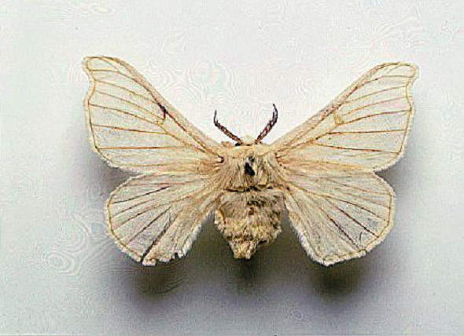
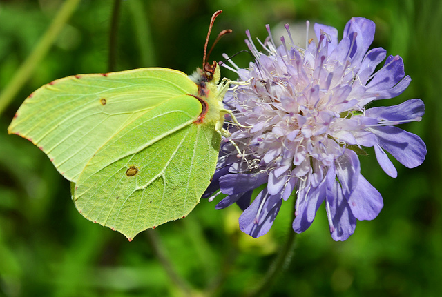
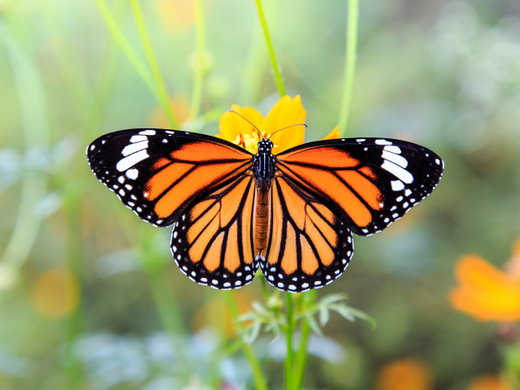

Fluturii apartin arborelui evolutionist al moliilor. Originea lor a fost stabilita in peioada cretacica, care s-a incheiat in urma cu 65 de milioane de ani. Din pacate, exista o arhiva foarte limitata de fosile. Fluturii sunt distribuiti in prezent in toata lumea, cu exceptia regiunilor foarte calde si aride. A fost estimat un numar de 17,500 de specii de fluturi (Papilionoidea) dintr-un numar de 180,000 de specii de Lepidoptera.
Fluture de matase Fluturele Brimstone Fluturele Monarh CuriozitatiSpecii
1. Fluturele de matase
Viermele de matase este singura insecta domisticita pana acum. Numele stiintific este Bombycidelor. Face parte din ordinul Lepidopterelor (fluturi).Specia are importanță economică, larva, cunoscută sub denumirea de vierme de mătase, fiind producătoare de mătase naturală. Ramura agriculturii care se ocupă cu creșterea viermilor de mătase se numește sericicultură. Este una dintre insectele cu metamorfoză completă, prezentând un ciclu evolutiv tipic cu 4 stadii: ou, larvă (omidă), crisalidă şi fluture de mătase.
Ciclul evolutiv al fluturelui de matase

1. Oul
Oul fecundat, sau sămânța reprezință primul stadiu din ciclul evolutiv al fluturelui. Oule fecundate trec apoi printr-o perioadă de repaus aparent, care poartă numele de diapauză și obișnuit, în zona țării noastre coincide cu anotimpul de iarnă. O femela depune aproximativ 680 de oua.
2. Larva
Larva denumita uzual, dar impropriu, viermele de matase, iese din ouale fecundate dupa o scurta perioada de incubatie (clocire).Stadiul de larva prezinta importanta practica pentru crescator datorita faptului ca in acest stadiu se realizeaza productia sub forma gogosilor de matase.
3. Crisalida
Crisalida se formeaza la 2-3 zile dupa ce larva si-a terminat depunerea firului cu care si-a urzit gogoasa. Acest stadiu dureaza 10-14 zile, in functie de rasa. In ultimele zile ale stadiului de crisalida, tegumentul ei se usuca treptat si se desprinde de corp, dupa care in locul crisalidei apare fluturele care iese din invelisul crisalidei si se prinde cu piciorele de captuseala interna a gogosii.
4. Fluturele
Fluturele este ultimul stadiu din ciclul evolutiv al viermelui de matase si are ca unica functie perpetuarea speciei. Acesta elimina prin orificiul bucal o saliva alcalina care inmoaie peretele gogosii la unul din capetele ei si facandu-si loc cu piciorele si cu capul, formeaza un orificiu princare iese afara. In primele zile apar in mod obisnuit masculii. Imperecherea dureaza doua trei ore, iar depunerea oualor dureaza aproximativ doua zile. Fluturii masculi traiesc circa 10 zile, iar cei femeli cu doua trei zile mai mult. Fluturele nu se hraneste in perioada ei de viata decat cu rezervele stocate in stadiul de larva.
2. Fluturele Brimstone (Lamaita)
Gonepteryx rhamni sau Lămâița este o specie inclusă în familia Pieridae. Perioada de zbor este destul de îndelungată, din aprilie până în octombrie, unii indivizi putând fi observați chiar și iarna atunci când temperaturile sunt mai ridicate, aceasta deoarece specia hibernează în stadiul de adult.Durata de viață a adulților este foarte îndelungată, ea poate ajunge până la 13 luni, după unii autori aceștia sunt cei mai longevivi fluturi din România. Fluturele Lămâiță este întâlnit în diferite tipuri de habitate, de la păduri la parcuri și grădini, este și o specie foarte mobilă, realizând migrații în timpul toamnei înspre habitatele în care urmează să hiberneze. Omizile Lămâiței se hrănesc cu frunze de Rhamnus. Lămâița cu al ei colorit fermecător ne încântă privirea încă de primăvara devreme, vestind parcă multitudinea de flori care urmează să înflorească.
3. Fluturele Monarh
Numele său științific este Danaus plexippus și este un o specie de lepidopteran ditrisio din familia Nymphalidae.luturele Monarh, din generatia toamnă și primăvară, este un fluture migrator, care zboară ca. 4000 de km, (70 km/zi) în timp de 8 săptămâni din America de Nord (SUA de la granița canadiană) până în Mexic. Pe timpul zborului se hrănește cu nectarul florilor de câmp și din smârcuri, care din păcate prin agricultura extensivă, devin tot mai rari. Fluturele Monarh are aripile de culoare brun-roșcată cu nervuri de culoare neagră, pe marginea aripilor sunt două rânduri de puncte albe. Fluturele cu aripile dechise atinge 10 cm lățime. Masculul se poate deosebi de femelă prin curbura aripilor, masculul are aripile arcuite în sus, pe când femela în jos. Aceasta specie de fluture poate trăi timp de 9 luni. Aceasta înseamnă că au o longevitate de 12 ori mai mare decât durata de viață a altor fluturi obișnuiți.